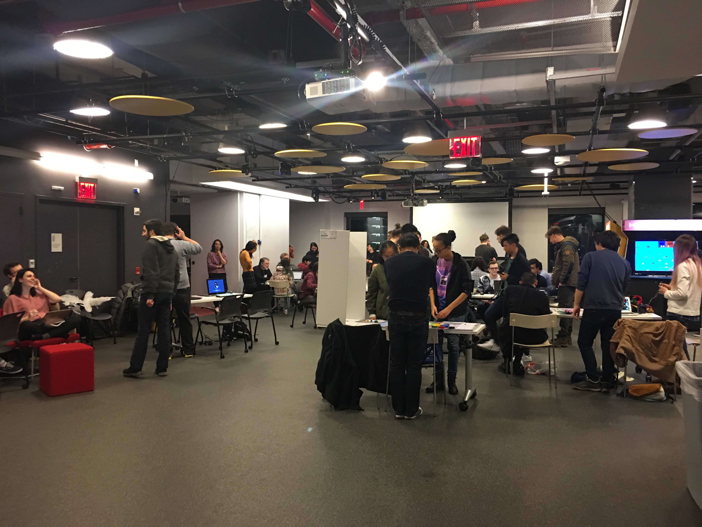

Global Game Jam at NYU Game Center
Date: 2018.01.30
Over the weekend (Jan 26-28), NYU Game Center was hosting a Global Game Jam and I went on and participated with the goal to learn. The game jam is meant for us to create a game within the time given. The theme for creation is transmission, such as transportation, radio waves, viruses etc.

I came to this event with a great curiosity as it was the first time for me to participate in a game jam. I started chatting with people around me and got to knew some interesting things people are doing. I ended up talking with a guy who does photogrammetry and 3D scanning to create realistic 3D props and texture. I was interested at this technology as I am taking a 3D modeling class, and I’ve experienced how hard it is to created 3D models out of sheer concept images. Photogrammetry could have the same, even better, more releastic results than modeling in Maya.
I did not have a team to start with, but I end up working with an amazing group of people! They are great, not quite because of their skill sets in game making (though I’m pretty sure they are talented in other aspects), but because of their personalities and vibes. Coincidentally, most of us are all Tandon sophomores. Some of them are studying Computer Science, some Mechanical Engineering. Our music person studies music technology in Steinhardt and there was an NYU graduated student too. We all gathered together for our shared, common interest for game.
During our brainstorming process, we thought of a lot of game concepts and formats. One thing I came up with that might be a simple concept for my future personal project is a board game: vaccines vs viruses started on random positions, roll dice and different slots on the map might have different functions. This is just a really simple, underdeveloped idea but I just thought I should make a record here.
Anyways, after a lot of voting and discussions, we ended up working on a virus transmission ideas that sort of derived from the board game Risk (instead of soldiers, we have viruses). Now, my focus here is not really our game-making process, because we never really finished our game and it was not really playable due to our lack of skill sets and organization. But it was still a really fun experience for me because of our interactions with each other. Diverging from this event’s ultimate practical goal to make a game, we had quite a lot of fun playing the actual game Risk. And we spent quite a lot of time to chat and share our experiences and ideas, which, in my opinion, are the best part of this event.